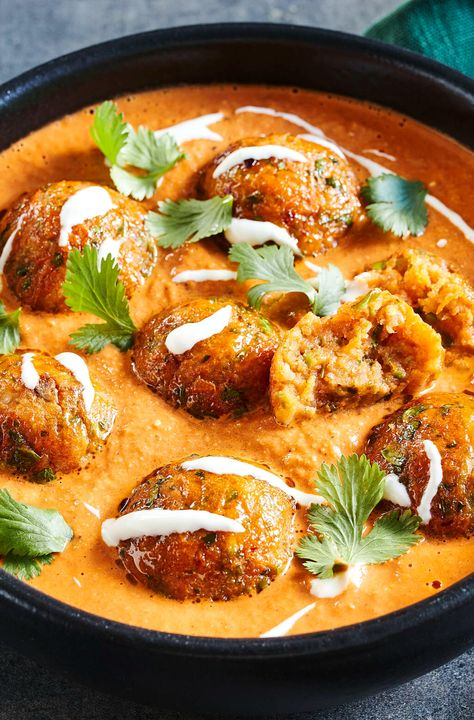
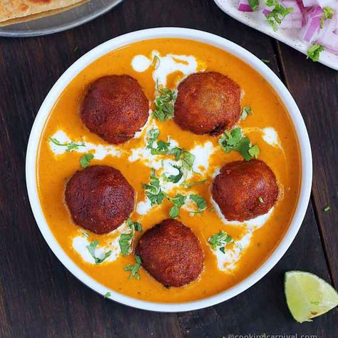

INGREDIENTS
For Kofta (Dumplings):
- 1 cup paneer (grated)
- 1 boiled potato (mashed)
- 1 tbsp cornflour (or all-purpose flour)
- 1/2 tsp garam masala
- 1/2 tsp red chili powder
- Salt to taste
- Oil for frying
For Gravy:
- 1 tbsp oil
- 1 onion (chopped)
- 1 tomato (pureed)
- 1 tsp ginger-garlic paste
- 6-8 cashews (soaked and blended into a paste)
- 1/2 cup milk or cream
- 1/2 tsp turmeric powder
- 1/2 tsp red chili powder
- 1/2 tsp garam masala
- Salt to taste
- 1/2 cup water
Recipe

- Step 1: Prepare the Koftas
- -In a mixing bowl, combine grated paneer, mashed potatoes, cornflour, cashews, raisins, garam masala, red chili powder, and salt.
- -Mix well and form small round balls.
- -Heat oil in a pan and deep-fry the koftas on medium heat until golden brown.
- -Drain on paper towels and keep aside.
- Step 2: Prepare the Gravy
- Heat butter and oil in a pan. Add bay leaf, cardamoms, cinnamon, and cumin seeds. Sauté for a few seconds.
- Add chopped onions and sauté until golden brown.
- Add ginger-garlic paste and cook until raw smell disappears.
- Add tomato puree and cook until oil starts separating.
- Add cashew paste, turmeric, red chili powder, coriander powder, garam masala, and salt. Mix well.
- Pour in water and let it simmer for 5-7 minutes.
- Add fresh cream and sugar (optional) and mix well. Simmer for another 2 minutes.
- Step 3: Assemble and Serve
- Place the fried koftas in the gravy just before serving.
- Garnish with fresh coriander leaves and a drizzle of cream.
- Serve hot with naan, roti, or jeera rice.